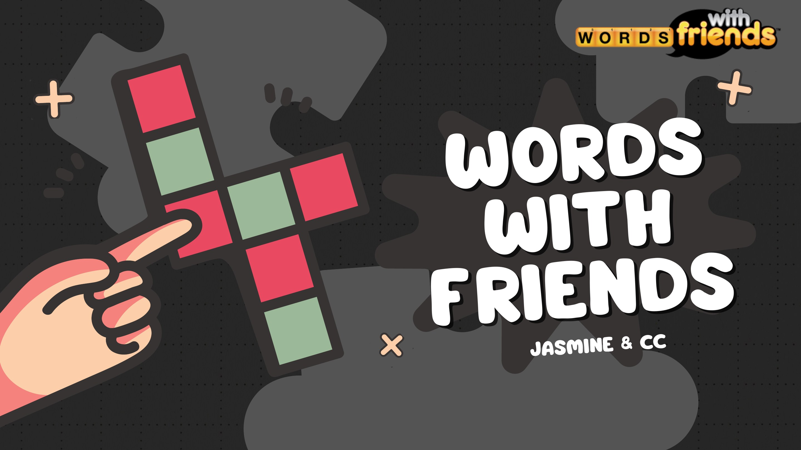
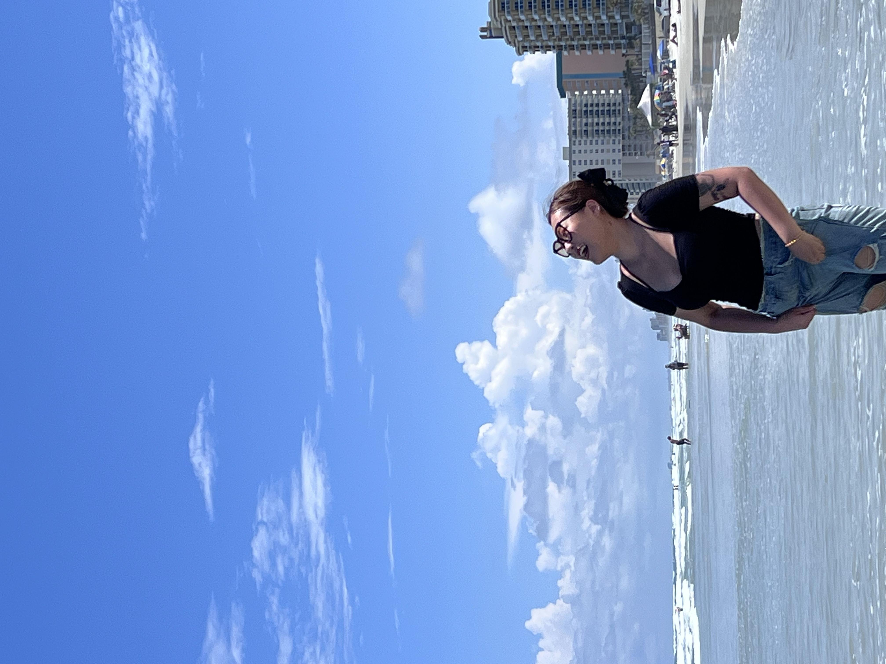

Words / Friends
A single word can carry a lifetime.


Creative strategist.
Art director.
Story collector.
Boston ↔ everywhere
Available for creative opportunities
The best advertising doesn’t interrupt culture. It earns a place inside it.
I move between strategy, words and visual systems to find the one human truth that can hold an entire campaign together—then build every touchpoint around it.
A single word can carry a lifetime.

Turning conservation into something you can build, share and protect.

A social-first system that turns recommendations into stories worth following.

Find the tension people feel but rarely say.
Turn research into one sharp strategic truth.
Make the idea big enough to travel.
Give every channel a meaningful role.
Remove everything the idea doesn’t need.
Community hosting taught me how to read a room.
Public health became integrated advertising—and curiosity found a language.
Art direction moved ideas from instinct into systems.
Strategy, copy and brand experience started working as one.
Looking for the team that believes ambitious ideas can still feel human.
Make it clear.
Make it felt.
Make it stay.